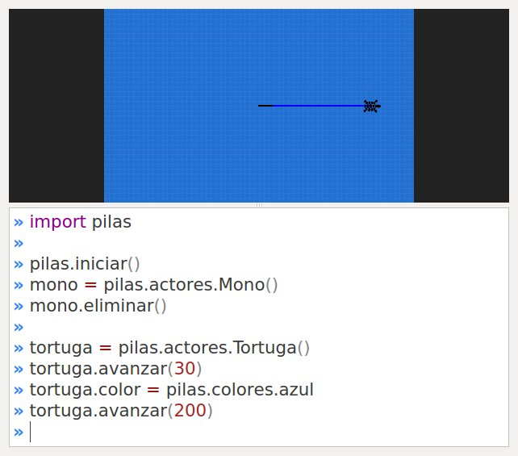
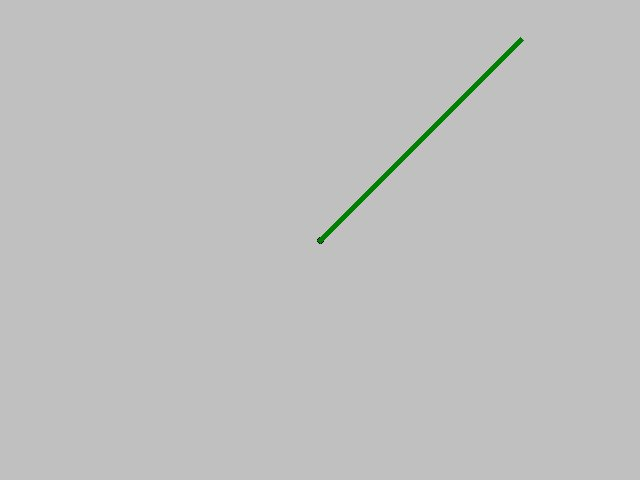
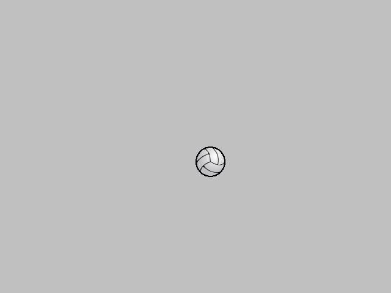
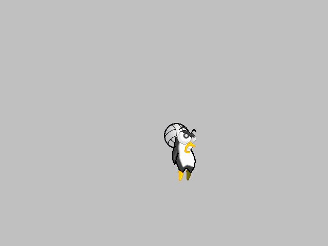

Dibujado simple en pantalla
Hasta ahora hemos mostrado en la pantalla fondos y actores que originalmente estaban almacenados en el disco de la computadora cómo imágenes.
En esta sección veremos como dibujar libremente, ya sean lineas, círculos, texto etc..
Comenzaremos con una forma de dibujado muy sencilla, y luego veremos algunas alternativas que ofrecen mas flexibilidad.
Ten en cuenta que el dibujo avanzado y mas flexible lo vamos a ver en el siguiente capítulo Dibujo avanzado con Superficies.
Usando la Tortuga para dibujar
El actor Tortuga está inspirado en una de
las actividades mas divertidas, didácticas y simbólicas
del lenguaje de programación logo, creado
por Seymour Papert.
La Tortuga básicamente es un actor que sabe
dibujar sobre la ventana de pilas. Para ello el
programador tiene que indicarle a la tortuga qué
movimiento debe realizar.
La siguiente imagen muestra lo que podría dibujar la tortuga con algunas sentencias de movimientos:

La imagen no alcanza a mostrar por completo el concepto, pero en pocas palabras se puede sintetizar lo que realmente hace.
El dibujo de la imagen anterior es una traza que va dibujando la tortuga a partir de su movimiento.
El siguiente código es el que se utilizó para dibujar esa linea de dos colores:
import pilas
pilas.iniciar()
tortuga = pilas.actores.Tortuga()
tortuga.avanzar(30)
tortuga.color = pilas.colores.azul
tortuga.avanzar(200)
Algo muy valioso en términos didácticos, es que uno podría animarse a realizar dibujos simples cómo una casa, un hexágono o cualquier otra figura diseñando una estrategia de movimiento para la tortuga.
Inspeccionando a la tortuga
Para manejar a este actor tienes varios comandos inspirados en logo.
Esta es una lista de los comandos mas utilizados:
| Método completo | nombre corto | ejemplo | ¿que hace? |
|---|---|---|---|
| avanzar | av | tortuga.av(10) |
avanza en dirección a donde mira la tortuga. |
| giraderecha | gd | tortuga.gd(45) |
gira hacia la derecha los grados indicados. |
| giraizquierda | gi | tortuga.gi(45) |
gira hacia la izquierda los grados indicados. |
| subelapiz | sl | tortuga.sl() |
deja de dibujar cuando se mueve la tortuga. |
| bajalapiz | bl | tortuga.bl() |
comienza a dibujar cuando la tortuga se mueve. |
| pon_color | pc | tortuga.pc(pilas.colores.rojo) |
dibuja con el color indicado. |
| pintar | pintar | tortuga.pintar(pilas.colores.blanco) |
pinta toda la pantala del mismo color. |
Por supuesto hay algunos mas, pero esos quedan para investigar en la clase propiamente dicha. Recuerda que el auto-completado del intérprete de python es bastante útil para estas cosas.
Usando una Pizarra
Si quieres dibujar sobre la pantalla pero
de forma inmediata y con algunas posibilidades mas
elaboradas, puedes
usar un actor llamado Pizarra. Esta no es la
forma mas avanzada, pero es el siguiente paso después
de dominar al actor Tortuga.
Este actor Pizarra es cómo un lienzo invisible sobre
el que podemos pintar imágenes, figuras
geométricas y trazos de cualquier tipo. De hecho, el actor
Tortuga que vimos antes, en realidad estaba
dibujando sobre una pizarra, solo que lo hacía con
animaciones y algo lento.
Comencemos con algo sencillo: para crear la pizarra y dibujar un punto en el centro de la pantalla se puede usar el siguiente código:
pizarra = pilas.actores.Pizarra()
pizarra.dibujar_punto(0, 0)
incluso podrías usar el argumento opcional color
si prefieres otro color, o trazar una linea:
pizarra.linea(0, 0, 200, 200, pilas.colores.verdeoscuro, grosor=5)

Pintando imágenes
Las pizarras también pueden dibujar imágenes sobre la superficie, y esto es útil cuando quieras crear pinceles especiales sobre la pizarra o construir un escenario usando bloques tipo ladrillos.
Para pintar una imagen solo tienes que cargarla e indicarla a la pizarra que la dibuje en una posicion determinada.
imagen = pilas.imagenes.cargar("pelota.png")
pizarra.pintar_imagen(imagen, 0, 0)
Así se verá:

Ten en cuenta que en estos casos, cuando estamos dibujando una imagen sobre otra, el punto destino (x, y) siempre indica la esquina superior izquierda de la imagen, no el centro u otra posición relativa como en el caso de los actores.
Pintando porciones de imágenes
Hay ocasiones en las que te resultará útil poder
pintar solamente porciones de una imagen sobre otra. Para
estos casos está el método pintar_parte_de_imagen.
Veamos la definición del método::
def pintar_parte_de_imagen(self, imagen, origen_x, origen_y, ancho, alto, x, y):
Dibujando grillas
De manera similar a las imágenes normales, sobre las pizarras también se pueden pintar grillas.
Solamente tenemos que crear la grilla, seleccionar el cuadro de animación y después decirle a la pizarra que pinte el cuadro actual de la grilla:
grilla = pilas.imagenes.cargar_grilla("pingu.png", 10)
pizarra.pintar_grilla(grilla, 0, 0)
Así se verá:

Esto es útil cuando se quieren pintar bloques de un escenario completo, por ejemplo podríamos tener una grilla con distintos tipos de suelos (pasto, piedra, tierra) y luego ir imprimiendo sobre una pizarra para formar un escenario completo.
La pizarra como actor
Recuerda que la pizarra también es un actor, así que puedes enseñarle habilidades, cambiar su posición, rotación o lo que quieras.